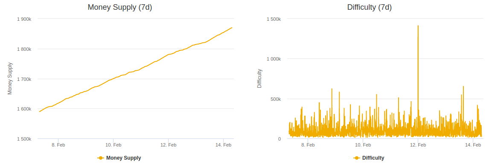
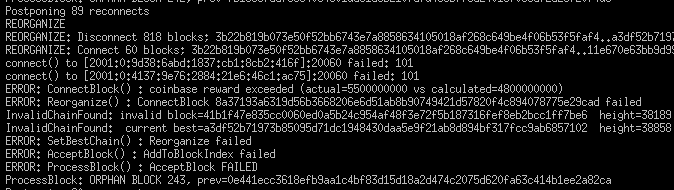
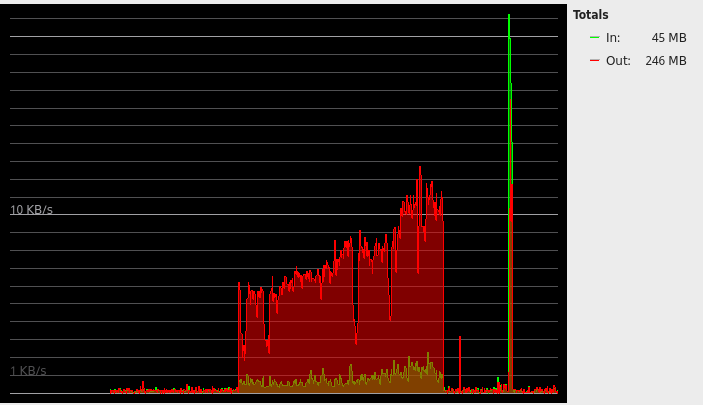
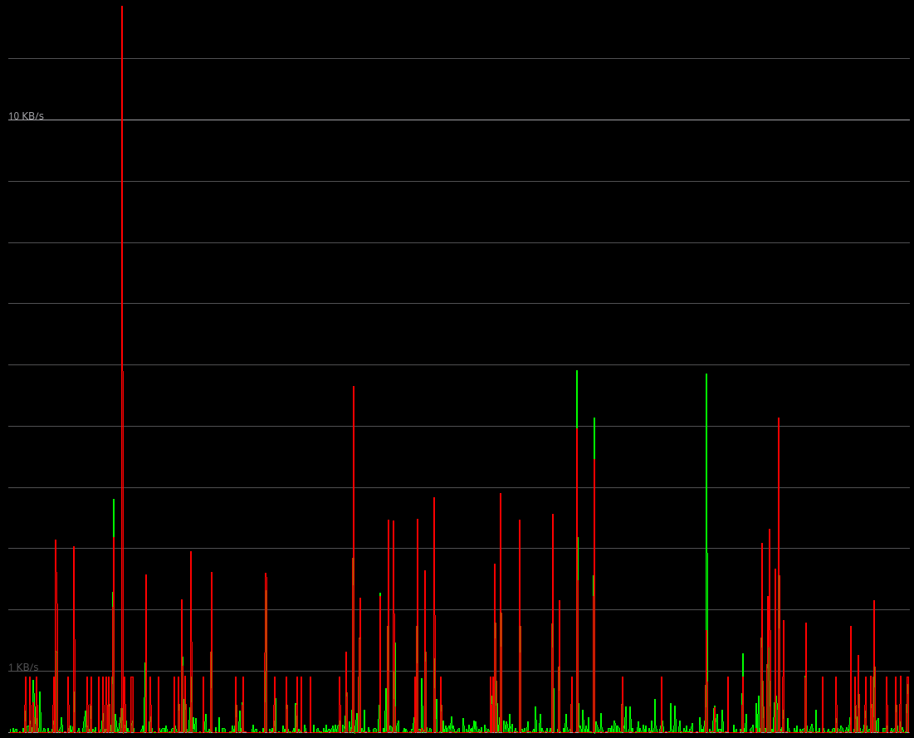

Features
Profit Hunters Coins are very unique... and rare!
PHC is a Pow/PoS/Masternode-based cryptocurrency to be used for affiliate opportunities and online marketing. Assisting new crypto-currency users get started with peer to peer profits.
Profit Hunters Coin (PHC) is a free open source decentralized project derived from Bitcoin, with the goal of providing a long-term energy-efficient scrypt-based crypto-currency. Built on the foundations of Bitcoin, Litecoin, PeerCoin, NovaCoin, CraveProject, Dash Masternodes, XUVcoin, BATA, and Crypostle to help further advance the field of crypto-currency.
What is a Blockchain?
Bitcoin's security is based upon peer to peer consensus algorithms. A blockchain is a distributed database of transactions securely linked together using cryptography. Once a peer consensus is formed over the validity of the blocks on the chain, they become permenant and can't be altered.
How can I stake a profit?
If you mine coins, or purchase them - keep your wallet online with your coins available for staking. This is similar to an interest account earning you daily returns for securing the P2P network. Trade your coins on an exchange or hold them!
Dynamic Block Rewards
If you would like to start mining with the least amount of power as possible for the most profit: you can join a pool when the network difficulty is high and the net-hashrate is low, this will cause the block reward to increase in value! If you decide to start mining with a lot of hash-power during a time of low difficulty: the block reward will decrease in value making it very difficult to earn a profit for your extreme efforts. Not to mention by doing so, you drive the difficulty up significantly, and if that triggers a pool's auto-coin switching script to move onto another alt-coin, then your mining efforts in terms of increased revenue will actually go to the workers who remain on the network consistently.
Bitcoin Firewall
Bitcoin Firewall uses a very unique method for detecting potential hard-fork chain-attacks coupled with specific block chain DDoS flooding. All connected nodes/peers are examined by the amount of data they're sending or receiving from a peer with the firewall enabled. If bandwidth usage is greater than the limits set, the connecting node is further examined to verify their blockchain start & sync height is within safe limits; The average among all peers connected. Range based blockchain checkpoints that use averages of live blockchain sizes further enhance security by limiting potential attacks known as >51% of distributed hashing power (double-spend, Sybil attack).
Masternodes
By investing into improving the PHC network infrastucture, you can earn up to 1000% APR (75% of network staking rewards)! 10,000 PHC collateral is required to run a full network node using a controller-slave dual wallet setup. This is an energy efficient alternative to mining with expensive equipment. Some of the special functions that these nodes perform are: Increasing privacy of transactions, Doing instant transactions, Participating in governance and voting, Enable budgeting and treasury system in cryptos. Masternodes are very attractive for crypto investors because of running a masternode you are earning a monthly or weekly interest on your crypto holdings.
Want to know more about PHC?
- It's a coin intended to be adopted by beginner and advanced crypto-currency users, it will be promoted through affiliate marketing in a peer to peer social network platform.
- Third party affiliate marketing services will be invited to join the social network, integrating their business solutions directly - offering incentives, rewards and commissions paid in PHC.
- Direct marketing campaigns on the platform will revolutionize how new opportunities are promoted and discovered, giving users the ability to communicate directly with each other, offering real-time permanent reviews that become stored on a custom side-chain. Decentralized solutions can easily be implemented with PHC using existing technology available for Bitcoin.
Dynamic Block Reward 3.0
- The block reward is calculated based on the last block's difficulty and current network hash-rate. If the network hash-rate jumps up a lot during low difficulty then it will result in a low block value. Some pools and miners are configured that when the difficulty goes up they usually switch over to another coin - leaving a very difficult block for low hash-rate to solve.
- PHC tries to automatically discourage this behaviour. When the difficulty is high and hash-rate is low - those are the most profitable blocks to solve! Pool jumpers are merely scratching the surface of their potential earnings. The block rewards for each block are not fixed, and fluctuated over time depend on total hash-rates in the network and difficulties at each block, they adjust dynamically.
- If you would like to start mining with the least amount of power as possible for the most profit: you can join a pool when the network difficulty is high and the network-hashrate is low, this will cause the block reward to increase in value!
- If you decide to start mining with a lot of hash-power during a time of low difficulty: the block reward will decrease in value, making it very difficult to earn a profit for your extreme efforts. Not to mention, by doing so: You drive the difficulty up significantly, and if that triggers a pool's auto-coin switching script to move onto another alt-coin. Then your mining efforts, in terms of increased revenue... Will actually go to the workers who remain mining on the network consistently.
- Reward adjustments based on network hash-rate, previous block difficulty simulating precious resource mining. If the difficulty rate is low; using excessive work to produce low value blocks does not yield large return rates.
- When the ratio of difficulty adjusts and the network hash-rate remains constant or declines: The reward per block will reach the maximum level, mining becomes very profitable at this time. Dynamic Block Reward 3.0 algorithm is intended to discourage greater than 51% attacks, or malicious miners. It will also act as an automatic inflation adjustment based on live network conditions – avoiding malicious miners that “hyper-inflate” coins and then quick sell.
Inflation Timeline:
- Block #1 Up to 50000 [Max PoW: 100 PHC] [Max PoS: 1000% APR]
- Block #50001 Up to 100000 [Max PoW: 50 PHC] [Max PoS: 500% APR]
- Block #100001 Up to 150000 [Max PoW: 25 PHC] [Max PoS: 250% APR]
- Block #150000 Up to 200000 [Max PoW: 12.5 PHC] [Max PoS: 125% APR]
- Block #200001 Up to 250000 [Max PoW: 6.25 PHC] [Max PoS: 62% APR]
- Block #250001+ [Max PoW: 3.125 PHC] [Max PoS: 31% APR]
Minimum PoW Reward: 1 PHC
PoW Block Value = SubsidyMax - (NetworkHashPS / Difficulty)
A few examples (Max 50 PHC):
- Hash-rate: 52766
- Difficulty: 92953
- Block value: 49.43 PHC
- Hash-rate: 52766
- Difficulty: 929530
- Block value: 49.94 PHC
- Hash-rate: 527660
- Difficulty: 92953
- Block value: 44.32 PHC
- Hash-rate: 5276600
- Difficulty: 92953
- Block value: 1 PHC
Difficulty is adjusted every 2 blocks, and if miners drop from the network during high difficulty (like they usually do) then the block reward becomes near the maximum. If the high hash-rate stays steady for a long period of time - the difficulty adjusts and the reward recovers too.
Security Aspects of the Dynamic Block Rewards:
Acts as a secondary hashing algorithm, by chaining blocks together based on time-sensitive network dependent variables. It's very difficult to attempt to fork the chain with orphan blocks maliciously generated, because the block value will depend on the previous difficulty and current network hash-rate and won't pass the ConnectBlock() check from other peers.
Bitcoin Firewall 1.2.2.3:
World's first Bitcoin Core 8 implementation of connections firewall & intelligent attack detection
Bitcoin Firewall uses a very unique method for detecting potential hard-fork chain-attacks coupled with specific block chain DDoS flooding. All connected nodes/peers are examined by the amount of data they're sending or receiving from a peer with the firewall enabled. If bandwidth usage is greater than the limits set, the connecting node is further examined to verify their blockchain start & sync height. The average among all peers connected is considered safe. Range based blockchain checkpoints that use averages of live blockchain sizes further enhance security by limiting potential attacks known as greater than 51% of distributed hashing power (double-spend, Sybil attack).
Coupled with other detection rules, this has proven quite successful in mitigating chain fork attacks or network flooding. Once a potential attack is detected the connected node/peer is forcefully terminated and added to a session blacklist.
Coin Specifications:
- Algorithm: Scrypt (Litecoin)
- Genesis Date: GMT: Monday, January 1, 2018 10:00:00 PM
- Max Supply: 100 000 000 PHC
- Premine: 0 PHC
- ICO: no
- Air Drop: 0
- Block Spacing: 60 Seconds (1 minute)
- Diff Retarget: 2 Blocks
- Maturity: 101 Blocks
- Stake Minimum Age: 1 Hour
- Master-node Collateral: 10,000 PHC
- Reward Distribution: 75% to Master-nodes while 25% to Staking wallets.
- 30 MegaByte Maximum Block Size (30X Bitcoin Core)
Staking:

Leaving your wallet online with an available balance of 1000 or more PHC will earn you random interest payments on transactions. Your wallet confirms new transaction blocks using the Proof of Stake algorithm. The amount you earn will be proportional to the total amount of coins available and their age as well as the total value of all inputs for the block solved.
Masternodes:
Master-nodes are another way to stake and assist the network security and dependability. These require 10,000 PHC for stake collateral and are randomly chosen among all master-nodes for up to 75% of network stake commissions. They offer superior security with cold and hot wallet modes.
The most cost effective solution is to order a VPS (Virtual Private Server) and setup a remote controller wallet with your collateral coins. This allows network traffic to connect to your slave wallet without opening up vulnerabilities to compromise your controller wallet (collateral coins)
Future Plans (Roadmap):
- Find and Fix bugs in the core code.
- Marketing to more exchanges, forums, and social networks
- Integrating PoW/PoS/Masternode source code into Bitcoin Core 10
- Creating a social network platform for beginner to advanced crypto-currency users and affiliates.
- Partnership and affiliate marketing solutions engineered for financial technology companies.
No timelines have been set for future developments, this project is volunteer based and progress will advance as new developers join and development master-node funding is established.